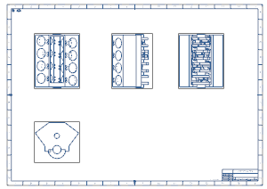

返回图纸
-
点击图纸工具条上的显示图纸页 。
将再次显示图纸页，并且所有组件都显示为整个部件。

-
在装配加载选项对话框中，将引用集按下列顺序重新排列：
使用模型
整个部件
空
按照保存的 -
右击 drf4_eda_eng_assm 节点并选择关闭→装配。
-
选中 drf4_eda_eng_assm 节点的复选框。

将使用模型引用集重新加载装配模型，这也是装配图纸上一次保存时的样子。
-
关闭所有部件。